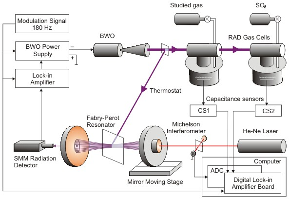

Radiation source
in the spectrometer is a backward wave oscillator (BWO) stabilized against
tunable Fabry-Perot cavity. Frequency measurement in the spectrometer is
performed relative toSO2
reference spectrum.
Principle of frequency measurements and radiation stability
Detailed description of the spectrometer is given in
[Ref. 4 (2007)]
The performed studies demonstrated advantages of this simple spectrometer without
phase locked loops having a possibility of continuous frequency scanning and
automated line frequency measurements in a broad frequency range especially
for investigation of dense molecular spectra such as acetaldehyde (CH3CHO)
[Ref. 2 (1993), Ref.
6 (1996)],
hydrogen fluoride dimer (HF...HF) [Ref.
1 (1990)] and H2O...HF heterodimer [Ref.
4 (2007)] as well as methyl fluoride (CH3F) [Ref.
1 and 2 (1991)]
and hydrogen selenid (H2Se) [Ref.
4 and 5 (1992)]
spectra. |